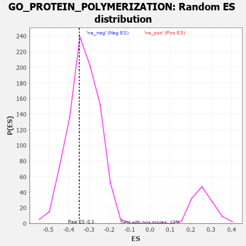

| | | Dataset | 7d |
| Phenotype | NoPhenotypeAvailable |
| Upregulated in class | na_neg |
| GeneSet | GO_PROTEIN_POLYMERIZATION |
| Enrichment Score (ES) | -0.34817836 |
| Normalized Enrichment Score (NES) | -1.0696063 |
| Nominal p-value | 0.3629124 |
| FDR q-value | 0.7903113 |
| FWER p-Value | 1.0 |
Table: GSEA Results Summary
 Fig 1: Enrichment plot: GO_PROTEIN_POLYMERIZATION
Fig 1: Enrichment plot: GO_PROTEIN_POLYMERIZATION
Profile of the Running ES Score & Positions of GeneSet Members on the Rank Ordered List
| PROBE | GENE SYMBOL | GENE_TITLE | RANK IN GENE LIST | RANK METRIC SCORE | RUNNING ES | CORE ENRICHMENT | | 1 | UBE2K | | | 94 | 1.739 | 0.0454 | No |
| 2 | TPPP3 | | | 195 | 1.079 | 0.0683 | No |
| 3 | MX1 | | | 578 | 0.604 | 0.0399 | No |
| 4 | NCK2 | | | 1131 | 0.458 | -0.0149 | No |
| 5 | TBCD | | | 1338 | 0.422 | -0.0271 | No |
| 6 | FKBP4 | | | 1390 | 0.412 | -0.0199 | No |
| 7 | DRG1 | | | 1633 | 0.368 | -0.0385 | No |
| 8 | TPPP | | | 1646 | 0.365 | -0.0279 | No |
| 9 | TPX2 | | | 1708 | 0.355 | -0.0239 | No |
| 10 | PAK3 | | | 1889 | 0.322 | -0.0361 | No |
| 11 | GPX4 | | | 1989 | 0.306 | -0.0386 | No |
| 12 | WASF1 | | | 2303 | 0.259 | -0.0696 | No |
| 13 | MET | | | 2430 | 0.240 | -0.0777 | No |
| 14 | SLIT2 | | | 2724 | 0.195 | -0.1083 | No |
| 15 | FER | | | 2803 | 0.183 | -0.1122 | No |
| 16 | BRK1 | | | 2805 | 0.183 | -0.1063 | No |
| 17 | UBE2S | | | 2980 | 0.153 | -0.1233 | No |
| 18 | MAP2 | | | 3074 | 0.140 | -0.1304 | No |
| 19 | TWF1 | | | 3199 | 0.123 | -0.1421 | No |
| 20 | FMN1 | | | 3363 | 0.095 | -0.1596 | No |
| 21 | GMFB | | | 3381 | 0.091 | -0.1587 | No |
| 22 | FES | | | 3501 | 0.077 | -0.1712 | No |
| 23 | MTOR | | | 4114 | -0.025 | -0.2479 | No |
| 24 | ABL1 | | | 4125 | -0.027 | -0.2483 | No |
| 25 | MZT1 | | | 4145 | -0.032 | -0.2496 | No |
| 26 | ARPC2 | | | 4232 | -0.047 | -0.2589 | No |
| 27 | ARL2 | | | 4254 | -0.050 | -0.2599 | No |
| 28 | BAG4 | | | 4314 | -0.061 | -0.2654 | No |
| 29 | OPA1 | | | 4330 | -0.065 | -0.2651 | No |
| 30 | EPS8 | | | 4474 | -0.088 | -0.2803 | No |
| 31 | ABI2 | | | 4554 | -0.106 | -0.2868 | No |
| 32 | ARPC3 | | | 4659 | -0.129 | -0.2957 | No |
| 33 | CHMP3 | | | 4660 | -0.129 | -0.2914 | No |
| 34 | ARF6 | | | 4704 | -0.140 | -0.2923 | No |
| 35 | WASF3 | | | 4730 | -0.145 | -0.2907 | No |
| 36 | FLII | | | 4795 | -0.156 | -0.2936 | No |
| 37 | TPPP2 | | | 4800 | -0.157 | -0.2890 | No |
| 38 | DLG1 | | | 4860 | -0.169 | -0.2908 | No |
| 39 | CAPZB | | | 4908 | -0.179 | -0.2909 | No |
| 40 | SSH1 | | | 5254 | -0.258 | -0.3261 | No |
| 41 | PICK1 | | | 5265 | -0.263 | -0.3186 | No |
| 42 | LATS1 | | | 5412 | -0.298 | -0.3273 | No |
| 43 | NDE1 | | | 5578 | -0.339 | -0.3370 | Yes |
| 44 | TTC17 | | | 5589 | -0.341 | -0.3270 | Yes |
| 45 | MX2 | | | 5745 | -0.390 | -0.3338 | Yes |
| 46 | BBS4 | | | 5806 | -0.407 | -0.3280 | Yes |
| 47 | ARL6 | | | 5847 | -0.417 | -0.3193 | Yes |
| 48 | ARPC4 | | | 5886 | -0.430 | -0.3099 | Yes |
| 49 | DCTN1 | | | 5950 | -0.454 | -0.3029 | Yes |
| 50 | CENPJ | | | 5968 | -0.460 | -0.2899 | Yes |
| 51 | TTBK1 | | | 5969 | -0.460 | -0.2747 | Yes |
| 52 | JMY | | | 6023 | -0.479 | -0.2657 | Yes |
| 53 | CKAP5 | | | 6032 | -0.482 | -0.2508 | Yes |
| 54 | RAC1 | | | 6036 | -0.484 | -0.2352 | Yes |
| 55 | ADD2 | | | 6046 | -0.487 | -0.2203 | Yes |
| 56 | EVL | | | 6052 | -0.490 | -0.2048 | Yes |
| 57 | DBNL | | | 6084 | -0.501 | -0.1922 | Yes |
| 58 | GBA2 | | | 6136 | -0.515 | -0.1817 | Yes |
| 59 | VDAC2 | | | 6242 | -0.553 | -0.1768 | Yes |
| 60 | SVIL | | | 6259 | -0.558 | -0.1604 | Yes |
| 61 | TRPV4 | | | 6515 | -0.668 | -0.1706 | Yes |
| 62 | KANK1 | | | 6536 | -0.678 | -0.1508 | Yes |
| 63 | ARF1 | | | 6583 | -0.701 | -0.1335 | Yes |
| 64 | CLIP1 | | | 6667 | -0.746 | -0.1194 | Yes |
| 65 | CATIP | | | 6690 | -0.756 | -0.0973 | Yes |
| 66 | PAK1 | | | 6691 | -0.757 | -0.0724 | Yes |
| 67 | FHOD3 | | | 6835 | -0.834 | -0.0630 | Yes |
| 68 | DNM1L | | | 6963 | -0.913 | -0.0490 | Yes |
| 69 | COTL1 | | | 7166 | -1.046 | -0.0401 | Yes |
| 70 | KANK3 | | | 7605 | -1.559 | -0.0441 | Yes |
| 71 | CAV3 | | | 7896 | -2.739 | 0.0095 | Yes |
Table: GSEA details [plain text format]

Fig 2: GO_PROTEIN_POLYMERIZATION: Random ES distribution
Gene set null distribution of ES for GO_PROTEIN_POLYMERIZATION